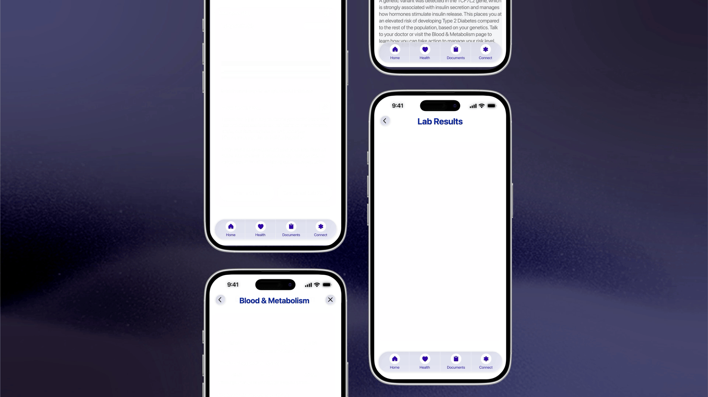

hey, i’m michael! i’m a multidisciplinary graphic designer with a unique background in corporate science communications + marine biology. i’m focused on creating intuitive digital experiences that turn complex ideas and systems into clear, thoughtful, and engaging interactions. my work builds on a strong foundation in typography, creative coding, motion graphics, branding, + data visualization. when i’m not designing, you can find me practicing one of my eclectic hobbies like scuba diving, playing violin, printmaking, or crafting.

speculative platform design for parameter, a company developing an all-in-one health management platform that aggregates genetic insights + lab data to provide users with a holistic, actionable health snapshot.

bubbles is a playful reinterpretation of the address book that allows users to nest and organize their social circles, as well as organize and import contacts using ai-powered tools.
design + development of a chrome extension designed to help users reduce impulse shopping on amazon while providing local shopping alternatives. parsons capstone project, now available on the chrome web store.

product research, development, + ux design for a mobile application designed to help adults rediscover group learning.

speculative feature design for expedia, focused on creating a climate-positive improvement to the service. eco mode makes climate impact visible to users when making important travel decisions.

product development, ux design, ai system design, + video mockup creation for sociahaus, an events curation + social connectivity platform.